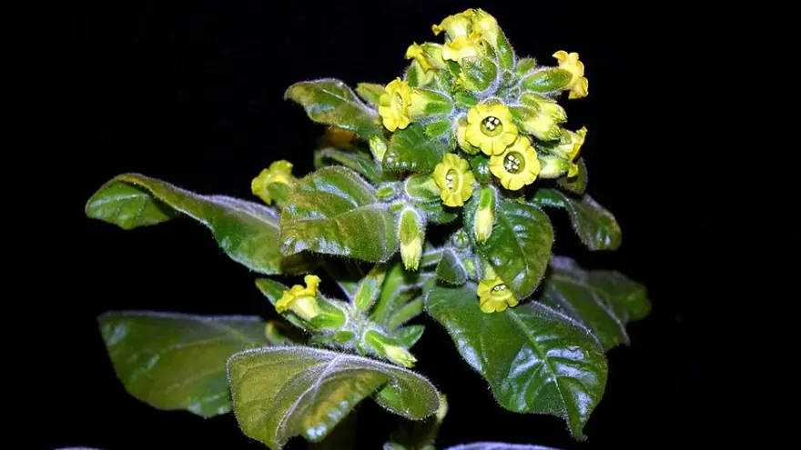

Contenido
En pocas palabras
- Qué es. Una planta americana, sagrada para muchos pueblos indígenas, que acompaña a menudo a la ayahuasca en forma de mapacho o rapé.1
- Qué hace. La nicotina estimula, sube el pulso y la tensión y libera dopamina.2
- El riesgo principal. Una dependencia muy fuerte y, bebido, la intoxicación por nicotina. Fumado de forma habitual, cáncer y enfermedades del corazón y los pulmones.3,4
- La interacción más peligrosa. Con estimulantes y con anticonceptivos con estrógenos; y fumar cambia los niveles de algunos medicamentos.5
- Uso terapéutico. Ninguno; en cambio, la psilocibina se investiga para dejar de fumar.6,7
Qué es y de dónde viene
El tabaco es originario de América y fue durante milenios una de las plantas más sagradas de muchos pueblos indígenas.1 En la Amazonía se usa sobre todo el mapacho (Nicotiana rustica), con mucha más nicotina que el tabaco comercial. Aparece en ceremonias de ayahuasca, en forma de humo soplado sobre las personas, y en el rapé: tabaco en polvo mezclado con cenizas y otras plantas que se sopla por la nariz.

| Tipo | Estimulante |
|---|---|
| Acción principal | La nicotina activa los receptores nicotínicos de acetilcolina |
| Vías | Fumado, rapé (nasal), mascado, en infusión (muy peligrosa) |
| Potencial adictivo | Muy alto |
Las dos especies principales son el tabaco comercial (Nicotiana tabacum) y el mapacho (Nicotiana rustica). Sus formas de uso tradicional son muy distintas de un cigarrillo:
- Mapacho: cigarros de tabaco fuerte, sin aditivos, que se fuman o cuyo humo se sopla sobre las personas en las ceremonias.
- Rapé: tabaco en polvo, a menudo mezclado con cenizas de cortezas y otras plantas, que otra persona sopla por la nariz con un tubo.
- Tabaco bebido o aspirado en agua: en algunas tradiciones amazónicas, como parte de dietas de purga. Es la forma más peligrosa.
Por qué está en esta web: acompaña con frecuencia a la ayahuasca y otras ceremonias, y se vende como «planta sagrada» sin explicar que su principio activo, la nicotina, es muy adictivo y puede intoxicar.
Cómo actúa
La nicotina activa los receptores nicotínicos de acetilcolina del cerebro y del resto del cuerpo. Libera dopamina en los circuitos de recompensa, lo que explica su enorme capacidad de crear dependencia, y activa el sistema nervioso simpático: sube el pulso y la tensión.2
Por qué engancha tanto. Fumada, la nicotina llega al cerebro en segundos, y su efecto dura poco: el cuerpo aprende enseguida a pedir la siguiente dosis.2
Un efecto poco conocido. El humo del tabaco, no la nicotina, acelera en el hígado la eliminación de algunos medicamentos, como la clozapina, la olanzapina o la teofilina. Al dejar de fumar sus niveles pueden subir: conviene avisar al médico.5
Los efectos
ExperienciaEn el uso ceremonial, el tabaco no busca visiones sino foco, «limpieza» y arraigo. En el uso cotidiano, la sensación es de alivio, porque calma la abstinencia del cigarrillo anterior.
Efectos
- Con rapé o mapacho: subida intensa, mareo, sudor, lagrimeo, sensación de «limpieza» y foco.
- Náuseas y vómitos con cantidades altas.
- Subida del pulso y de la tensión.
- Con poca experiencia, mareo, palidez, sudor frío y náuseas: es una intoxicación leve por nicotina.
Dosis
No damos cifras de dosis. La cantidad de nicotina cambia mucho entre el tabaco comercial y el mapacho, y entre un rapé y otro. Lo que más cambia el riesgo es la vía: bebido o aspirado en líquido, la nicotina se absorbe en grandes cantidades y puede intoxicar gravemente.
Interacciones
Ordenadas de más a menos peligrosas:
| Combinación | Riesgo | Qué puede pasar |
|---|---|---|
| Estimulantes (cocaína, anfetaminas, MDMA) | Peligrosa | Suman su carga sobre el corazón y los vasos sanguíneos. |
| Anticonceptivos con estrógenos | Peligrosa | Fumar aumenta el riesgo de trombosis, sobre todo a partir de los 35 años.5 |
| Clozapina, olanzapina, teofilina y otros medicamentos que se eliminan por la enzima CYP1A2 | Precaución | El humo baja sus niveles; al dejar de fumar pueden subir de golpe. Avisa a tu médico.5 |
| Ayahuasca y otros psicodélicos | Precaución | El mapacho y el rapé suben el pulso y la tensión y pueden aumentar las náuseas y el mareo durante la ceremonia. |
| Alcohol | Precaución | Cada uno empuja a consumir más del otro, y juntos multiplican el riesgo de algunos cánceres. |
Esta tabla no es completa. Si tomas cualquier medicamento, consúltalo con un profesional sanitario.
Quién no debería
- Corazón y tensión: hipertensión, arritmias, enfermedad coronaria o antecedentes de infarto o ictus.
- Pulmones: asma, EPOC u otras enfermedades respiratorias, si se fuma.
- Embarazo y lactancia: la nicotina daña al feto y pasa a la leche. No se debe usar.
- Edad: no en menores; el cerebro adolescente se engancha con más facilidad.
- Personas que han dejado de fumar: el rapé o el mapacho ceremonial pueden reactivar la dependencia.
- Medicación: ver la tabla de interacciones.
Cómo reducir riesgos
APDER no anima a consumir. Si decides hacerlo, sobre todo en un contexto ceremonial, estas medidas reducen los riesgos, aunque no los eliminan.
En ceremonia
- Pregunta qué se va a usar y cómo. Fumado o en rapé tiene un riesgo; bebido o aspirado en agua, otro mucho mayor.
- No bebas tabaco fuera de un contexto con personas que conozcan bien la práctica y puedan atender una intoxicación.
- Puedes decir que no al rapé o al mapacho. Una ceremonia seria lo respeta.
- Cuenta tu medicación y tus problemas de salud a quien guía la ceremonia.
En el día a día
- Si fumas y quieres dejarlo, tu centro de salud ofrece ayuda gratuita y tratamientos que duplican las posibilidades de conseguirlo.
- El rapé frecuente irrita y daña la mucosa de la nariz.
El riesgo propio del tabaco: la intoxicación por nicotina
Sus señales son náuseas y vómitos, sudor frío, palidez, mareo, salivación, temblores y pulso muy rápido o, más tarde, muy lento. En los casos graves, convulsiones, desmayo y dificultad para respirar. Si aparecen estas señales graves, sobre todo tras beber tabaco, llama al 112.4
A largo plazo, fumar es una de las principales causas evitables de muerte en el mundo: cáncer, enfermedades del corazón y de los pulmones.3
Si algo va mal
Llama al 112 si la persona:
- no responde o ha perdido el conocimiento;
- tiene convulsiones;
- respira con dificultad o tiene dolor en el pecho;
- está muy caliente, con la piel seca o roja, o confundida;
- está tan agitada que puede hacerse daño o hacerlo a otras personas;
- habla de hacerse daño o de quitarse la vida.
El 112 es gratuito y atiende en toda la Unión Europea. Pedir ayuda a tiempo importa más que el miedo a las consecuencias.
Mientras llega la ayuda
- No dejes sola a la persona.
- Si está inconsciente y respira, ponla de lado, en posición lateral de seguridad.
- Busca un sitio tranquilo, fresco y con poca luz.
- No le des más sustancias ni otras para «contrarrestar» el efecto.
- Si está consciente, agua a sorbos; beber mucha agua de golpe también es peligroso.
Qué contar al personal sanitario
Qué ha tomado, cuánto, cuándo, si lo ha mezclado con algo y qué medicación toma de forma habitual. Si queda un resto o el envase, llévalo. Decir la verdad sirve para tratar bien a la persona. Para dudas sobre una intoxicación, el Servicio de Información Toxicológica atiende las 24 horas en el 91 562 04 20.
Si es una experiencia difícil, sin señales físicas de alarma
Acompaña con presencia y voz tranquila. Recuerda a la persona que lo que siente es el efecto de la sustancia y que pasará. Si no cede o aparece riesgo, pide ayuda. Si alguien tiene pensamientos de hacerse daño, la Línea 024 del Ministerio de Sanidad atiende gratis, las 24 horas y de forma confidencial.
Antes de tomar nada
Analizar una sustancia es la única forma de saber qué contiene. En España lo hace Energy Control, con sedes en Andalucía, Cataluña, Madrid y Mallorca y envío por correo desde otras comunidades. Revisa también el apartado de interacciones de cada guía.
Investigación y uso terapéutico
InvestigaciónParadójicamente, una de las líneas de investigación más prometedoras con psilocibina es para dejar de fumar: en un estudio piloto, la mayoría de participantes seguía sin fumar seis meses después.6 Consulta la guía de psilocibina.
A largo plazo, en el seguimiento de ese mismo grupo, una parte importante seguía sin fumar más de un año después.7 Son estudios pequeños, sin grupo de comparación; hay ensayos más grandes en marcha.
Acceso reguladoPara dejar de fumar existen tratamientos autorizados (sustitutos de nicotina, vareniclina, bupropión y apoyo psicológico), disponibles en el sistema sanitario. La psilocibina para dejar de fumar solo se puede recibir dentro de ensayos clínicos.
Integración y crecimiento personal
InterpretaciónLo que sigue es una mirada desde la psicología humanista y transpersonal, no un dato de laboratorio. Para muchos pueblos amazónicos y norteamericanos el tabaco es un maestro, un protector y un mensajero de las oraciones. El cigarrillo industrial es casi lo contrario: una relación sin intención, repetida decenas de veces al día.
Desde el enfoque centrado en la persona de Carl Rogers, la pregunta útil no es «¿soy capaz de dejarlo?», sino «¿qué hace por mí el tabaco y qué necesidad hay detrás?». Desde la Gestalt, darse cuenta de cada gesto de fumar ya cambia algo. Recuperar el respeto que las tradiciones tenían por la planta puede ser, para algunas personas, una forma de soltarla.
Mitos y realidades
- «El tabaco ceremonial no engancha»
- La nicotina es la misma: el mapacho tiene incluso más. Que el contexto sea sagrado no cambia su capacidad de crear dependencia.
- «El mapacho es más sano porque no lleva aditivos»
- No lleva aditivos, pero lleva más nicotina, y el humo de cualquier tabaco contiene sustancias cancerígenas.
- «El rapé no es tabaco»
- La mayoría de los rapés llevan tabaco, muchas veces mapacho, y por tanto nicotina.
- «Beber tabaco limpia el cuerpo»
- Bebido, la nicotina se absorbe en grandes cantidades y puede intoxicar gravemente.4
Historia
El tabaco se domesticó en América hace miles de años y se usaba en rituales, curación y diplomacia. Tras la llegada de los europeos se extendió por todo el mundo como producto de consumo y se convirtió en una de las principales causas evitables de muerte.
- Hace miles de años. Domesticación del tabaco en América; uso en rituales, curación y diplomacia.1
- Siglo XVI. Los europeos lo llevan a todo el mundo.
- Siglo XX. El cigarrillo industrial se convierte en una de las principales causas evitables de muerte.3
- 2014. Primer estudio piloto con psilocibina para dejar de fumar.6
Preguntas frecuentes
¿El rapé lleva nicotina?
Casi siempre, porque la mayoría de los rapés se hacen con tabaco, a menudo mapacho, que tiene mucha nicotina.
¿Es peligroso beber tabaco?
Sí. Bebido, la nicotina se absorbe en grandes cantidades y puede causar vómitos, temblores, convulsiones y problemas de corazón y de respiración.
¿Puede la psilocibina ayudar a dejar de fumar?
Un estudio piloto pequeño dio resultados prometedores, pero no hay pruebas suficientes y solo se puede recibir en ensayos clínicos. Hay tratamientos autorizados que sí funcionan.
¿Por qué se usa tabaco en las ceremonias de ayahuasca?
En muchas tradiciones amazónicas es una planta maestra y protectora: se sopla su humo sobre las personas o se toma en rapé para centrar y «limpiar».
Si dejo de fumar, ¿cambia mi medicación?
Puede cambiar. El humo acelera la eliminación de algunos medicamentos, como la clozapina o la olanzapina, y al dejar de fumar sus niveles pueden subir. Avisa a tu médico.
Guías relacionadas
Referencias
- Wilbert J. Tobacco and Shamanism in South America. Yale University Press; 1987.
- Benowitz NL. Pharmacology of nicotine: addiction, smoking-induced disease, and therapeutics. Annu Rev Pharmacol Toxicol. 2009;49:57-71. doi:10.1146/annurev.pharmtox.48.113006.094742.
- Organización Mundial de la Salud. Tobacco: fact sheet. https://www.who.int/news-room/fact-sheets/detail/tobacco
- Mayer B. How much nicotine kills a human? Tracing back the generally accepted lethal dose to dubious self-experiments in the nineteenth century. Arch Toxicol. 2014;88(1):5-7. doi:10.1007/s00204-013-1127-0.
- Kroon LA. Drug interactions with smoking. Am J Health Syst Pharm. 2007;64(18):1917-1921. doi:10.2146/ajhp060414.
- Johnson MW, Garcia-Romeu A, Cosimano MP, Griffiths RR. Pilot study of the 5-HT2AR agonist psilocybin in the treatment of tobacco addiction. J Psychopharmacol. 2014;28(11):983-992. doi:10.1177/0269881114548296.
- Johnson MW, Garcia-Romeu A, Griffiths RR. Long-term follow-up of psilocybin-facilitated smoking cessation. Am J Drug Alcohol Abuse. 2017;43(1):55-60. doi:10.3109/00952990.2016.1170135.
Última revisión: 23 de noviembre de 2026. Dosis e interacciones pendientes de revisión experta.
Antes de seguir. Esta información es divulgativa. La preparamos con cuidado a partir de fuentes científicas y de reducción de riesgos, pero puede tener errores o quedarse antigua. No es consejo médico ni sustituye a un profesional sanitario, sobre todo si tomas medicación o tienes algún problema de salud. APDER no anima al consumo de ninguna sustancia y no se hace responsable del uso que se haga de esta información. Si ves un error, escríbenos a info@apder.org.
Dirección canónica: https://apder.org/sustancias/tabaco/